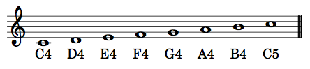

Musicianship Resources
Pitches and octave designations
Karpinski, Chapter 8 (pp. 36–37), provides an adequate explanation of generic pitch names on the treble and bass staves, and you are already familiar with the modification of generic pitches with sharps, flats, and naturals. However, when specifying a particular pitch precisely, we also need to know the register. In fact, if all you have is C-sharp or B-flat, you do not have a pitch, you have a pitch-class. A pitch-class plus a register together designate a specific pitch.
We will follow the International Standards Organization (ISO) system for register designations. In that system, middle C (the first ledger line above the bass staff or the first ledger line below the treble staff) is C4. An octave higher than middle C is C5, and an octave lower than middle C is C3.
The tricky bit about this system is that the octave starts on C and ends on B. So an ascending scale from middle C contains the following pitch designations:

And a descending scale from middle C contains the following pitch designations:

Pitches on the alto staff are as follows:

Any accidentals follow the octave designation of the natural pitch with the same generic name. Thus a half step below C4 is C-flat4 (even though it sounds the same as B3), and a half step above C4 is C-sharp4.
Note that a complete designation contains both the pitch-class name (a letter name plus an optional sharp or flat) and the register (the ISO number indicating the octave in which the pitch is found). Unless both are present, you do not have the full designation of a specific pitch.